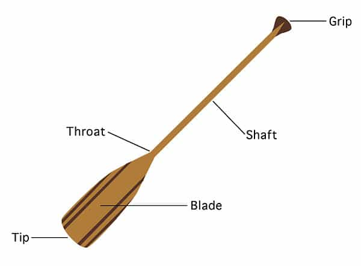

Luke Stranahan is an engineer by trade and an armed patriot by inclination. He writes for Return of Kings as a leisure pursuit and an attempt to do his part to help reverse the slide into moral decrepitude of modern society. Follow him on Twitter.


The canoe, perhaps one of the most universal and time honored means of marine transportation, is slowly falling out of style and its operation becoming a lost art in today’s society. There is no man-powered craft better to take a girl on a date and, in this article, we’ll cover enough basics so you can do so confidently.
Canoes are, in modern times, typically two person boats made for inland waterways and are around 15 feet long. Although it’s more stable and higher performance to kneel, most people sit out of comfort. Canoeing is easy to learn, and, provided one has a grasp of physics, straightforward to master. Fortunately for us here at ROK, if you know what you’re doing, you can take a girl on a date canoeing without her ever having sat in one before, and you’ll have a great time. The trick is that, with a canoe, you want to be a back seat driver. Put her in the front, teach her to paddle and backpaddle on command, you take care of the rest, and the boat magically goes where you want it, resulting in a good time for all and maybe her riding the front of something else later on.
Canoes beat rowboats because they’re more elegant and nimble (and you can see where you are going as opposed to sitting backwards), but, most importantly, she’s INVOLVED and not just sitting there. She gets ownership in the “we did this” activity of the day, and gets all the exercise endorphins, too.
Canoes also beat kayaks, because, while she gets exercise from them, too, you don’t get to control where she goes if she’s got her own boat; and kayaks are more straightforward than a canoe, which robs you of your mastery over something she doesn’t know. Paddle boards are just stupid.
Canoes are simple craft; new ones are plastic or aluminum, old ones are aluminum, fiberglass, or even wood. I’d go with a new plastic one, or get a Grumman aluminum. Pointed at both ends, the only difference between the bow and the stern (front and back) is that the stern seat is right on the stern, and the bow seat has room for your feet.
The struts across the top are thwarts, the rails are gunwales, and the ridge on the bottom is a keel, designed to keep you from sliding sideways in wind. Most canoes have a flattish bottom, which makes them relatively more stable. If your canoe has a rounded bottom and no keel; that’s a whitewater boat designed to sideslip, and is more unstable than a lake canoe. Your paddle’s components (made of either wood, or plastic and aluminum) are a blade that has a tip and a throat where the shaft joins on, and a grip at the other end of the shaft. They come in varying lengths, if you put the throat at your nuts, the grip should be at about your forehead.

You need two paddles, one canoe, two personal flotation devices (lifejackets, use types 2 or 3), sunscreen, and a woman, and you’re all set to go canoeing.
The basic principle of a canoe is based off of the idea that the guy in the stern is further away from the center of the boat than the girl in the bow. This gives you more leverage than the girl, and means that, if you both paddle equally, the canoe will turn away from the side on which the stern guy is paddling. This is by design, and allows you to control the boat. Do not, I repeat, DO NOT, swap sides to turn the boat. That is for idiots and actors, and is something called the “Hollywood J stroke” for that reason.
The money in controlling the canoe lies solely in the real J stroke and, through it, you can do everything you need to do from whatever side you are paddling on. Put your girl paddling on whatever side she wants, you paddle on the other, and switch every so often for fatigue.
Let’s talk about her job. She has five strokes to know, and all are simple. Always put the hand of the side you’re paddling on on the throat, and the other on the grip. The forward paddle consists of leaning forward, inserting the blade into the water up to your hand, and pulling back smoothly alongside the hull of the boat till your bottom hand is past your waist, then removing the paddle from the water and going back to the start. The Back Paddle is the opposite of this. That’s forward and backwards.
If you need to turn the boat away from the side she’s on, you have her do the “quarter sweep.” Lean forward, stick the paddle into the water pointing forward, and sweep away from the boat to 90 degrees out. Do not go further than 90 degrees as any further is actually stopping your turn. To turn the boat towards her side, she doesn’t have to do anything other than paddle forward normally; you’ll do it.
Sideways movement of the canoe, like getting to a dock, is either the draw, or the push, depending on which way you want to go. If she’s on the right, and you want to go left, she’ll do the push, which is putting the paddle straight into the water, parallel to the side of the boat, and pushing away as far as comfortable. The draw, designed to pull you towards the side you’re on, is the opposite.
To pivot the boat, have her either do the quarter sweep, or the backpaddle, depending on which way you want to spin, and you’ll do the opposite on your side in the stern. There’s some other bow stuff I’ll cover in a later article, but that will do for now.
Hold the paddle in the same way, and most of these are the same, or almost the same, as the bow strokes. The big one to know is the J stroke. This is the stroke you’ll do 90% of the time in the boat, and, through it, that boat does what you want. Know it, and rule the boat; don’t, and you’re going in circles.
Since it’s named J, the stroke is the basic forward paddle, along with a flip at the end. Insert the blade normally at the front of your stroke, pull alongside the hull, and, when you get to the end, with the paddle extended behind you, curl your wrist so that the blade is sideways in the water, and give a little push away from the boat.
Remember the leverage I talked about earlier? You have three things you want to do while in forward motion in a canoe: go straight, turn away from the side you’re on, or turn towards the side you’re on. The J cancels out your natural leverage to turn the boat away from the side you’re on, so, if you want to turn that way, omit the J, or employ the same quarter sweep we talked about in the bow positions.
No J would make the canoe turn right. A lot of J would make it turn left.
If you want to go straight, use enough J to cancel your leverage. If you want to turn towards the direction you’re on, give it more J, and maybe even leave the paddle in the water at the end of the J, leaving it dragging at an angle, which is something called a “stern rudder.”
Back paddle works the same way as in the front, as does the draw and the push. There’s something called the reverse sweep, which is a backwards quarter sweep, and done like you think it would be; by putting the blade in sideways by the stern, and sweeping out 90 degrees. Coupling a reverse sweep on your side with a quarter sweep on her side is the preferred way (and fastest) to pivot a canoe, although pushing and drawing together works too.
You can tell her to stop paddling and let it run, and she pulls the paddle out and you coast, or to hold water, and that is to stick the paddle in and hold it there against the flow, which is the closest thing you’ll get to brakes.
The preferred method to entry and exit is on land, but we’ll cover water methods too. To launch a canoe, carry it into the water, one at the bow and one at the stern. You will get your feet wet. Get it floating, bow out, then come back to the stern, cross your arms over the stern, and hug it with your legs. Your girl will walk down the center of the boat, holding onto the gunwales and sit down. You then push off a bit, stand beside the boat, and step onto the centerline in front of your seat and sit down.
To land is the same thing in reverse. Hit the shore, have her get out and stabilize it for you as you move down the centerline in the same way as above. Getting into the boat from a dock involves lowering yourself, standing on the centerline facing forward, and sitting down. You get in first and get out last so you can stabilize it for her.
Exiting a canoe while underway is as simple as standing up and rolling sideways. Don’t jump, just roll and tuck your feet. Your partner can lean the opposite direction and put their paddle in in a push position to counteract the tilt of your departure.
Getting back in from the water is a little more challenging. If you’re both out, have her hold her side down while you reach in above the gunwales and do a push up off the inside of the hull where it curves to be the bottom, and roll your ass over the gunwale in. Once in, lean sideways away from her side, and she can do a pushup on the gunwale to enter, which is easier than you just did. Do not lean over to help her, else you’ll capsize. I’ll cover solo reentry at another time.
You need to know what to do if you swamp the boat. Canoes have flotation, they won’t sink while swamped, so make sure your girl is ok, then collect all the floating away stuff (make sure that cell phone is double bagged before you go.)
If you’re near the land, grab the painter line on one end, and swim towards shore towing the boat. Once there, turn it sideways, pick it up, dump the water, set it down, and off you go. If you’re with another canoe, once they get done laughing, turn yours upside down, point it perpendicular at the center of their boat, and have them lift the end of yours over theirs, sliding it onboard, doing what is called a T rescue since that’s the letter it resembles. Once totally out of the water, flip it right side up, slide it off, and have them hold it parallel to theirs while you two board.
If you’re in open water with no buddies, you get to do it the fun way. Turn the boat upside down, and swim underneath it, popping up in the air bubble inside the thing. This, incidentally, is a good position to maintain if you are in such rough water you can’t resume navigation; keep it upside down, and hang onto the gunwales.
Assuming you can safely right it, face your partner, and both grab ahold of the submerged gunwales. Decide to which side you want to fling it, and count three and toss it up and sideways so it chucks out most of the water and ends up right side up. Board as covered earlier.

1 Flip inverted. 2. Get under it (they put it over them here). 3 Lift above head. 4 Toss sideways. 5/6 Board.
That should get you enough basic knowledge to run a canoe in a decently competent manner. Canoe rentals are cheap, and it’s a good date. Be warned, the waterways are one of the premier places for men who are “supposed to know how to do this” to screw up royally and endanger everyone around them while trying to be macho as hell. Add to that the situation of everyone coming at it from a different philosophy; you’ve got hippies, Outward Bound types, Manly Men ™, yuppies, and former Boy Scouts, of which the Scouts are the only ones who actually know what they’re doing. I taught it many years ago at a BSA summer camp in Florida, so I may be a little biased. Regardless, unless you’re Burt Reynolds, go practice (a lot) before you try anything in open water or a long way away from others. Be safe.
Read More: 14 Essential Subjects That We’ll Teach Children At The ROK International School.